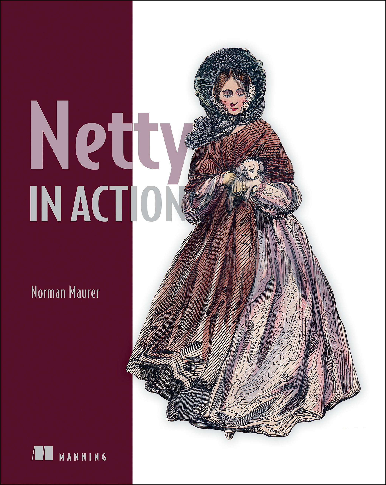

|  |
Обзор книги "Netty in Action"22 January 2015 Как сказал David Wheeler, все проблемы в Computer Science могут быть решены еще одним уровнем абстракции. Netty как раз предлагает такой уровень абстракции для клиент-серверных приложений, работающих через NIO(non-blocking input-output). Netty упрощает разработку TCP, UDP серверов, но также дает доступ к использованию низкоуровнего API, представляя свои высокоуровневые абстракции. |
Блокирующий против неблокирующего ввода-вывода в JVM
Продолжающийся рост веба увеличивает потребность в обработке все большего количества данных через сеть и возможностей масштабирования. Эффективность приложений выходит на первое место и встречается со спросом на эту эффективность. К счастью, Java уже поставляется со всеми инструментами, необходимыми для создания эффективных и масштабируемых приложений. Хотя ранние версии Java поддерживали работу с сетью, в Java 1.4 был представлен NIO API, который упрощал разработку клиент-серверных приложений.
Новый ввод-вывод (NIO.2), представленный в Java 7, дает возможность писать асинхронный, работающий с сетью код и также предлагает более высокоуровневый API , чем его предшественник.
Для работы с сетью у вас есть всего два варианта:
-
Использовать IO, известный как блокирующий ввод-вывод
-
Использовать NIO, известный как новый/неблокирующий ввод-вывод
Figure 1. Блокирующие сокеты

Figure 2. Неблокирующие сокеты
На рисунках 1,2 показано, что блокирующий ввод-вывод использует по выделенному потоку на на каждое соединение, это означает, что мы имеем связь один-к-одному между подключениями и потоками, которая ограничивает количество потоков, которое может создать JVM.
Запомнив это концептуальное отличие, попробуем написать простой сервер, используя разные подходы. Сервер будет принимать запросы от клиента, и отправлять их назад.
import java.io.BufferedReader;
import java.io.IOException;
import java.io.InputStreamReader;
import java.io.PrintWriter;
import java.net.ServerSocket;
import java.net.Socket;
public class PlainEchoServer {
public void serve(int port) throws IOException {
final ServerSocket socket = new ServerSocket(port); (1)
try {
while (true) {
final Socket clientSocket = socket.accept(); (2)
System.out.println("Accepted connection from " +
clientSocket);
new Thread(new Runnable() { (3)
@Override
public void run() {
try {
BufferedReader reader = new BufferedReader(
new
InputStreamReader(clientSocket.getInputStream()));
PrintWriter writer = new PrintWriter(clientSocket
.getOutputStream(), true);
while(true) { (4)
writer.println(reader.readLine());
writer.flush();
}
} catch (IOException e) {
e.printStackTrace();
try {
clientSocket.close();
} catch (IOException ex) {
// ignore on close
}
}
}
}).start(); (5)
}
} catch (IOException e) {
e.printStackTrace();
}
}
public static void main(String[] args) throws IOException {
new PlainEchoServer().serve(9000);
}
}| 1 | Привязываем сервер к порту |
| 2 | Блокируем основной поток, пока клиент не подключится |
| 3 | Создаем новый поток и обрабатываем подключение клиента |
| 4 | Читаем введенные клиентом данные и записываем их назад |
| 5 | Запускаем поток |
Подключиться к такому серверу можно с помощью telnet, например вот так:
telnet localhost 9000На каждого нового клиента требуется создать отдельный поток. Можно, конечно, сделать какой-нибудь pool потоков, чтобы уменьшить затраты на создание каждый раз нового потока, и переиспользовать уже созданные, но это поможет лишь только на время. Основная проблема все же остается: количество одновременных клиентов будет ограничено количеством потоков, обрабатывающих их. Когда приложению необходимо обрабатывать одновременно тысячи клиентов, это становится большой проблемой.
Эта проблема исчезает, если мы будем использовать NIO, как например, в следующем примере. Но для начала важно узнать основные концепции в NIO.
Основные концепции NIO
Java 7 представила новый NIO API, известный как NIO.2, но можно так же использовать и "просто" NIO. Хотя новый API также асинхронный, он отличается от исходной реализации NIO, как API, так и реализацией. Хотя API не сильно отличаются, они оба имеют одинаковые возможности. Например, обе реализации используют одну и ту же абстракцию под названием ByteBuffer, как обертку для данных.
Bytebuffer
ByteBuffer - это основа для обоих NIO APIs, так же как и в Netty. ByteBuffer может быть создан как и в Java куче (heap), так и напрямую, что означает, что он будет хранится вне кучи. Использование буфера напрямую обычно быстрее, когда мы передаем его какому-то каналу (channel), но стоимость создание и очистки/удаления такого буфера выше. В обоих случаях, API Bytebuffer’а один и тот же, который позволяет одним унифицированный образом управлять данными в буфере. ByteBuffer позволяет одним и тем же данным быть легко доступными между разными экземплярами Bytebuffer, без необходимости копировать внутренние данные. Так же он предоставляет другие операции, который ограничивают видимость внутренних данных.
Slicing ByteBuffer
Типичное использование ByteBuffer включает следущее:
-
Записать данные в ByteBuffer
-
Вызвать ByteBuffer.flip() для смены режима на чтение
-
Чтение данных из ByteBuffer
-
Вызов либо ByteBuffer.clear(), либо ByteBuffer.compact()
Когда данные пишутся в ByteBuffer, он следит за количеством данных, записанных в него, сохраняя позицию индекса записи. Перед тем, как прочитать данные нужно вызвать Bytebuffer.flip(), чтобы сменить режим с записи на режим чтения. Вызов метода ByteBuffer.flip() устанавливает ограничение в ByteBuffer в текущую позицию, а затем устанавливает ее в 0. Таким образом можно считать все данные из ByteBuffer.
Чтобы опять записать данные в ByteBuffer, нужно вернуться в режим чтения, а затем вызвать следующие методы:
-
ByteBuffer.clear() Очищает все данные в буфере
-
ByteBuffer.compact() Очищает только те данные, которые были прочтены, и перемещает все непрочитанные данные в начало и сдвигает позицию, типичное использование:
Channel inChannel = ....;
ByteBuffer buf = ByteBuffer.allocate(48);
int bytesRead = -1;
do {
bytesRead = inChannel.read(buf); (1)
if (bytesRead != -1) {
buf.flip(); (2)
while(buf.hasRemaining()){
System.out.print((char) buf.get()); (3)
}
buf.clear(); (4)
}
} while (bytesRead != -1);
inChannel.close();| 1 | Прочитать данные из канала (Channel) в ByteBuffer |
| 2 | Подготовим буфер для чтения |
| 3 | Прочитаем байты из ByteBuffer,с каждым вызовом get() обновляем индекс позиции на 1 |
| 4 | Подготовим буфер для записи |
Теперь, когда понятно, как работать с ByteBuffer, рассмотрим концепцию селекторов (Selectors).
Работа с NIO селекторами (Selectors)
NIO API использует основанный на селекторах подход для обработки сетевых событий и данных. Канал (channel) выступает в роли соединения между сущностями, способными осуществлять операции ввода-вывода над такими сущностями как как файл или сокет. Селектор это NIO компонент, который определяет готов ли канал или несколько каналов для чтения/записи, получается что один селектор способен обработать множество подключений, сводящий на нет необходимость для использования модели поток-на-соединение, как было блокирующем сервере из первого примера.
Чтобы использовать селектор нужно выполнит следующие шаги:
-
Создать один или несколько селекторов, в которых можно зарегистрировать каналы (channels)
-
Когда каналы зарегистрированы, нужно указать события,к которые будут прослушиваться. Существует 4 типа событий:
-
OP_ACCEPT
-
OP_CONNECT
-
OP_READ
-
OP_WRITE
-
-
Когда каналы зарегистрированы, необходимо вызвать метод Selector.select(), который заблокирует основной поток, пока какое-нибудь из событий не произойдет.
-
Когда метод разблокируется, можно получить все экземпляры SelectionKey(содержит ссылки на зарегистрированный канал и тип события) и выполнить свой код. Что конкретно выполнять зависит от типа события, которое пришло. SelectedKey может содержать больше чем одно событие в один промежуток времени.
Чтобы увидеть как это работает на деле, нужно реализовать неблокирующую версию сервера из предыдущего примера.
import java.io.IOException;
import java.net.InetSocketAddress;
import java.net.ServerSocket;
import java.nio.ByteBuffer;
import java.nio.channels.SelectionKey;
import java.nio.channels.Selector;
import java.nio.channels.ServerSocketChannel;
import java.nio.channels.SocketChannel;
import java.util.Iterator;
import java.util.Set;
public class PlainNioEchoServer {
public void serve(int port) throws IOException {
System.out.println("Listening for connections on port " + port);
ServerSocketChannel serverChannel = ServerSocketChannel.open();
ServerSocket ss = serverChannel.socket();
InetSocketAddress address = new InetSocketAddress(port);
ss.bind(address); (1)
serverChannel.configureBlocking(false);
Selector selector = Selector.open();
serverChannel.register(selector, SelectionKey.OP_ACCEPT); (2)
while (true) {
try {
selector.select(); (3)
} catch (IOException ex) {
ex.printStackTrace();
// handle in a proper way
break;
}
Set readyKeys = selector.selectedKeys();(4)
Iterator iterator = readyKeys.iterator();
while (iterator.hasNext()) {
SelectionKey key = (SelectionKey) iterator.next();
iterator.remove();//; (5)
try {
if (key.isAcceptable()) {
ServerSocketChannel server = (ServerSocketChannel)
key.channel();
SocketChannel client = server.accept();(6)
System.out.println("Accepted connection from " +
client);
client.configureBlocking(false);
client.register(selector, SelectionKey.OP_WRITE | SelectionKey.OP_READ, ByteBuffer.allocate(100));(7)
}
if (key.isReadable()) {(8)
SocketChannel client = (SocketChannel) key.channel();
ByteBuffer output = (ByteBuffer) key.attachment();
client.read(output);(9)
}
if (key.isWritable()) {(10)
SocketChannel client = (SocketChannel) key.channel();
ByteBuffer output = (ByteBuffer) key.attachment();
output.flip();
client.write(output);(11)
output.compact();
}
} catch (IOException ex) {
key.cancel();
try {
key.channel().close();
} catch (IOException cex) {
}
}
}
}
}
public static void main(String[] args) throws IOException {
new PlainNioEchoServer().serve(9091);
}
}| 1 | Привязываем сервер к порту |
| 2 | Регистрируем канал с селектором для прослушивания событий типа "accept" |
| 3 | Блокируем пока какой-то селектор не сработает |
| 4 | Получаем все экземпляры SelectedKey |
| 5 | Убираем SelectedKey из итератора |
| 6 | Принимаем соединение клиента |
| 7 | Регистрируем соединение в селекторе и устанавливаем ByteBuffer |
| 8 | Проверяем SelectedKey на чтение |
| 9 | Читаем данные в ByteBuffer |
| 10 | Проверяем SelectedKey на запись |
| 11 | Записываем данные их ByteBuffer в канал |
Этот пример гораздо сложнее, чем предыдущая версия. Такая сложность - это своего рода компромисс. Асинхронный код обычно сложнее, чем его синхронная версия. Семантически, исходный NIO и NIO.2 API одинаковые, но на самом деле их реализация разная. Далее мы разработаем 3 версию нашего сервера.
EchoServer, основанный на NIO.2
В отличие от первой реализации NIO, NIO.2 позволяет отлавливать конкретные операции ввода-вывода и завершить их специальным классом-обработчиком (CompletionHandler). Это класс должен выполняется после завершения какой-либо операции. Таким образом он запускается внутренним механизмом NIO и реализация скрыта от разработчика. Так же гарантируется,что только один обработчик будет выполняться для одного канала в один промежуток времени. Этот подход позволяет упростить код, потому что убирается вся сложность работы с многопоточным кодом.
Основное различие между NIO и NIO.2 это то, что не требуется самому проверять - произошло ли какое-то событие и вызывать необходимый обработчик. В NIO.2 нужно только запустить IO (input-output) операцию и зарегистрировать обработчик (CompletionHandler), который будет получать уведомления, когда операция завершится. Поэтому необходимость писать свою собственную логику на проверку завершения операция отпадает. Сейчас, давайте посмотрим как будет выглядеть асинхронный EchoServer , реализованный с помощью NIO.2 API.
import java.io.IOException;
import java.net.InetSocketAddress;
import java.nio.ByteBuffer;
import java.nio.channels.AsynchronousServerSocketChannel;
import java.nio.channels.AsynchronousSocketChannel;
import java.nio.channels.CompletionHandler;
import java.util.concurrent.CountDownLatch;
public class PlainNio2EchoServer {
public void serve(int port) throws IOException {
System.out.println("Listening for connections on port " + port);
final AsynchronousServerSocketChannel serverChannel =
AsynchronousServerSocketChannel.open();
InetSocketAddress address = new InetSocketAddress(port);
serverChannel.bind(address); (1)
final CountDownLatch latch = new CountDownLatch(1);
serverChannel.accept(null, new
CompletionHandler<AsynchronousSocketChannel, Object>() {
(2)
@Override
public void completed(final AsynchronousSocketChannel channel,
Object attachment) {
serverChannel.accept(null, this);(3)
ByteBuffer buffer = ByteBuffer.allocate(100);
channel.read(buffer, buffer,
new EchoCompletionHandler(channel));(4)
}
@Override
public void failed(Throwable throwable, Object attachment) {
try {
serverChannel.close();(5)
} catch (IOException e) {
// ingnore on close
} finally {
latch.countDown();
}
}
});
try {
latch.await();
} catch (InterruptedException e) {
Thread.currentThread().interrupt();
}
}
private final class EchoCompletionHandler implements
CompletionHandler<Integer, ByteBuffer> {
private final AsynchronousSocketChannel channel;
EchoCompletionHandler(AsynchronousSocketChannel channel) {
this.channel = channel;
}
@Override
public void completed(Integer result, ByteBuffer buffer) {
buffer.flip();
channel.write(buffer, buffer, new CompletionHandler<Integer,
ByteBuffer>() {
(6)
@Override
public void completed(Integer result, ByteBuffer buffer) {
if (buffer.hasRemaining()) {
channel.write(buffer, buffer, this);(7)
} else {
buffer.compact();
channel.read(buffer, buffer,
EchoCompletionHandler.this);(8)
}
}
@Override
public void failed(Throwable exc, ByteBuffer attachment) {
try {
channel.close();
} catch (IOException e) {
// ingnore on close
}
}
});
}
@Override
public void failed(Throwable exc, ByteBuffer attachment) {
try {
channel.close();
} catch (IOException e) {
// ingnore on close
}
}
}
public static void main(String[] args) throws IOException {
new PlainNio2EchoServer().serve(9092);
}
}| 1 | Привяжем сервер к порту |
| 2 | Начинаем принимать новые подключения. Как только соединение установлено - CompletionHandler будет вызван |
| 3 | Опять принимаем новый соединения |
| 4 | Запускаем операцию чтения из channel, CompletionHandler будет уведомлен, когда что-нибудь будет прочитано |
| 5 | Закрываем socket если произошла ошибка |
| 6 | Запускаем операцию записи в channel, CompletionHandler будет уведомлен, когда что-нибудь будет записано |
| 7 | Запускаем еще раз операцию чтения, если что-то осталось в ByteBuffer |
| 8 | Запускаем операцию чтения в channel, CompletionHandler будет уведомлен, когда что-нибудь будет прочитано |
На первый взгляд может показаться, что в NIO.2 гораздо больше кода, чем в предыдущем примере с NIO. Но можно обратить внимание, что NIO.2 берет обработку многопоточности на себя и также создание так называемого цикла событий (event loop) . Этот подход упрощает разработку многопоточного приложения на NIO, даже если на первый взгляд код кажется сложным. Так как сложность приложений увеличивается, пропасть между этими подходами становится более очевидной, потому что во второй версии получается более читаемый код. Далее мы посмотрим на проблемы, который существуют в обоих реализациях NIO.
Проблемы с NIO и как Netty решает эти проблемы
Далее будут рассмотрены некоторые проблемы и ограничения реализации в Java NIO API, и как Netty решает эти проблемы. Если вы уже используете классы из пакета NIO - это шаг в правильном направлении, но пользователи весьма ограничены в способах его использования. Проблемы, с которыми вы столкнетесь, являются результатом дизайна, который был сделан в прошлом, и который сейчас не так то легко поменять.
Проблемы кроссплатформенности и совместимости
NIO фреймворк довольно низкоуровневый и сильно зависит от того, как сама операционная система обрабатывает операции ввода-вывода. Поэтому выполнить требование унифицированного API в Java, который должен вести себя одинаково на всех платформах, не очень простая задача.
Когда используешь NIO часто можно заметить, что код хорошо работает под Linux, например, в отличие от Windows. Это утверждение справедливо, кстати, не только для NIO.
| Даже если вы не используете NIO, очень важно тестировать ваше приложение на всех операционных системах, которые хотите поддерживать. Если все ваши тесты успешно выполняются на рабочей станции с Linux, удостоверьтесь, что они так же себя ведут и на других ОС. Если не проверили - приготовьтесь к неожиданностям. |
Может показаться, что NIO.2 поддерживается только в Java 7, и если ваше приложение работает на Java 6, то вы не сможете его использовать. Так же пока еще нет поддержки в NIO.2 каналов, работающих с датаграмами (datagram channels) (для приложений использующих UDP), поэтому использование NIO.2 ограничивается только TCP протоколом. Netty успешно скрывает эту проблему, и предоставляет общий API, который работает одинаково и на Java 6 и на Java 7. Не придется беспокоиться о версии Java, Netty API будет работать одинаково хорошо и предоставлять простой и удобный интерфейс.
Использовать ByteBuffer … или нет
Как вы видели ранее, ByteBuffer используется, как контейнер данных. К сожалению, JDK не имеет реализации контейнера ByteBuffer, которая бы позволяла обернуть массив экземпляров ByteBuffer. Эта функциональность бы очень пригодилась для минимизации количества копирований данных. Если вы вдруг решили реализовать эту структуру самостоятельно, не теряйте зря время, ByteBuffer имеет приватный конструктор, и поэтому невозможно от него наследоваться. Netty предоставляет свою реализацию ByteBuffer, которая обходит эти ограничения и предоставляет несколько вариантов конструкторов, методов для ByteBuffer в своем простом API.
Рассеивание данных и сбор (Scattering and gathering may leak)
Многие реализации каналов (channel) поддерживают рассеивание данных и сбор (scattering and gathering). Этото функционал позволяет читать и писать из нескольких экземпляров ByteBuffer одновременно, при этом с большей производительностью. Таким способом устроено ядро операционной системы, которое дает большую производительность на чтение/запись, потому что ядро ОС гораздо ближе к "железу", и знает как обрабатывать данные наиболее эффективным способом. Рассеивание/сбор часто используется для разделения разных экземпляров ByteBuffer для того, чтобы обрабатывать каждый экземпляр отдельно. Например, если мы захотим, чтобы заголовок находился в одном ByteBuffer, а тело с данными в другом. На рисунке показано как осуществляется рассеивающееся чтение. Мы передаем массив экземпляров ByteBuffer в ScatteringByteChannel и данные "рассеиваются" с одного канала (channel) к разным буферам.

Figure 3. Рассеивание
Сбор (Gathering) работает похожим образом, но данные наоборот - записываются в канал (channel). Вы передаете массив экземпляров ByteBuffer в метод GatheringByteChannel.write() и данные собираются из буферов в канал (channel).

Figure 4. Сбор
К сожалению, эта функциональность была сломана до одной из последних обновлений Java 6 и Java 7, использование ее приводило к утечке памяти и OutOfMemoryError. Нужно быть осторожным, когда используешь рассеивание/сбор (scattering/gathering) , и удостовериться что используется необходимая версия Java.
Подавление известного бага с событием epoll (Squashing the famous epoll bug)
На Linux-подобных операционных системах селектор (selector) использует уведомления epoll об IO событиях над объектом. Этот высоко-производительный способ позволят ОС работать асинхронно с сетевым стэком. К сожалению, известный баг с epoll может привести к неправильному состоянию селектора, что приводит к 100% загрузке CPU и бесконечному ожиданию (spinning). Единственный способ восстановить состояние - это пересоздать (recycle) старый селектор и переместить зарегистрированный экземпляр канала в только что созданный селектор. Что же произойдет если метод Selector.select() перестанет блокировать и сразу же вернет результат, даже если ни одного SelectionKeys не будет существовать. Это противоречит тому, что написано в javadoc - Selector.select() must not unblock if nothing is selected. Список проблем с epoll ограничен, и Netty пытается автоматически обнаруживать их и предотвращать. Следующий код демонстрирует баг с epoll:
...
while (true) {
int selected = selector.select(); (1)
Set<SelectedKeys> readyKeys = selector.selectedKeys();
Iterator iterator = readyKeys.iterator(); (2)
while (iterator.hasNext()) { (3)
...
... (4)
}
}
...| 1 | Не блокирует и возвращает 0, если ничего не было выбрано |
| 2 | Получает все SelectedKeys, Iterator будет пуст и ничего выбрано не будет |
| 3 | Проходит во всем SelectedKeys из Iterator, но в этот блок кода никогда не зайдет, потому что ничего небудет выбрано |
| 4 | Дальнейшая работа |
В итоге получается что небольшой кусок кода съедает весь CPU.
...
while (true) {
...
}
...Значение никогда не будет false, и код зависнет в бесконечном цикле и постепенно выест весь CPU, тем самым вытесняя остальные процессы. Это лишь несколько возможных проблеем, с которому можно столкнуться при использовании неблокирующего ввода-вывода. К сожалению, даже после многих лет разработки в этой области некоторые проблемы еще не решены, и Netty успешно абстрагирует разработчиков от этих проблем.
comments powered by Disqus